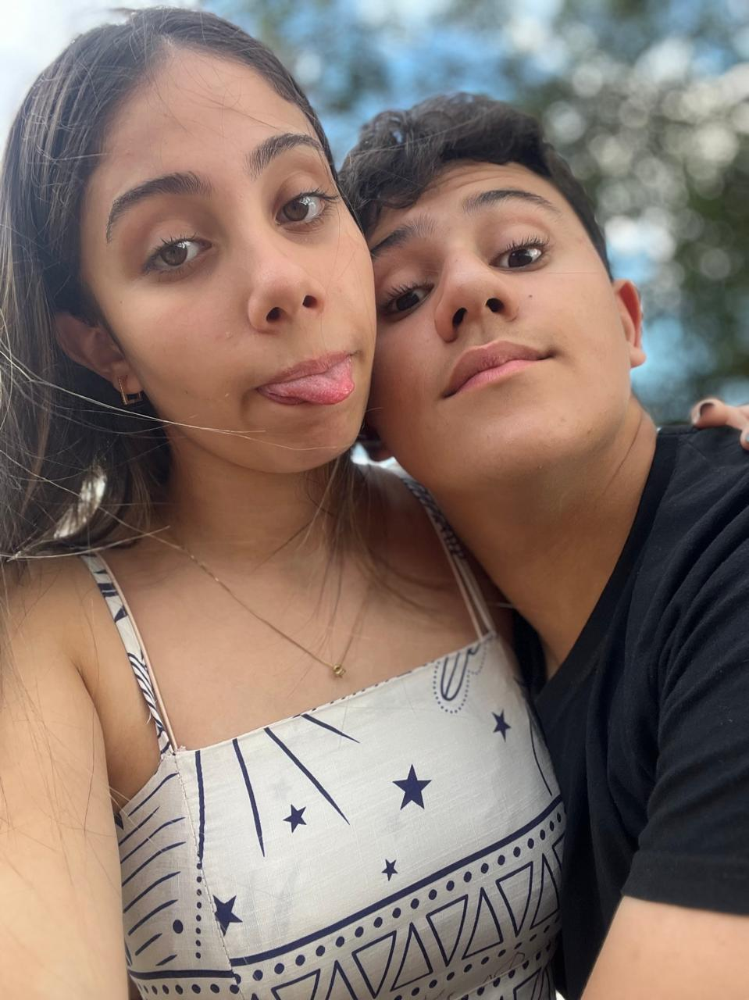
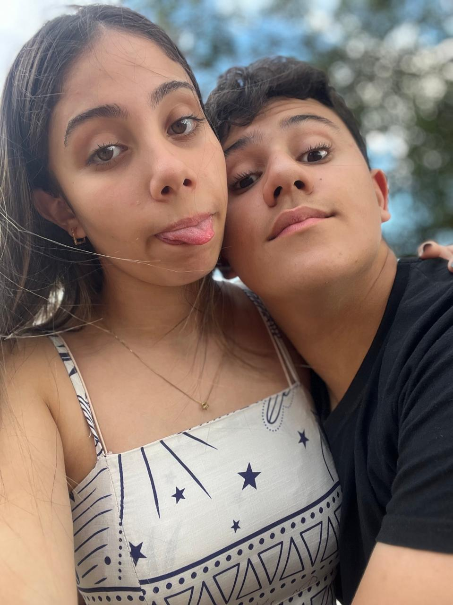

Lucas ❤️ Livia
 

Livia, Nos teus olhos, encontrei o infinito. Como se cada olhar fosse uma página que se vira, me levando cada vez mais fundo na nossa história. Em cada momento que passamos juntos, sinto que escrevemos um novo capítulo desta linda jornada que só nós dois compreendemos. O amor entre nós é como um vento suave: não podemos vê-lo, mas sentimos sua presença a cada toque, a cada sorriso, a cada palavra que trocamos. Você, Livia, é a poesia que dá vida ao meu coração, a razão para que cada dia seja mais brilhante que o anterior. Encontrar você foi como encontrar algo que faltava, algo que jamais soube que estava à procura. O amor que você me oferece é simples, mas ao mesmo tempo, poderoso e transformador, como um rio que, sem pressa, vai moldando as paisagens por onde passa. Cada sorriso seu traz consigo uma paz indescritível, como se o mundo inteiro se aquietasse ao nosso redor. E, mesmo que o tempo passe, sei que o que temos não será apagado, porque a verdadeira felicidade está na simplicidade de estarmos juntos, na alegria de compartilhar o que a vida tem a oferecer. Livia, sou imensamente grato por poder caminhar ao seu lado. O amor que sinto por você é mais profundo do que qualquer palavra pode expressar, mais forte do que qualquer sentimento eu jamais tenha experimentado. É uma história única, nossa, e ela continua a se escrever a cada dia que vivemos juntos. Eue amo, Livia, com todo o meu ser.
Tempo juntos
Calculando...